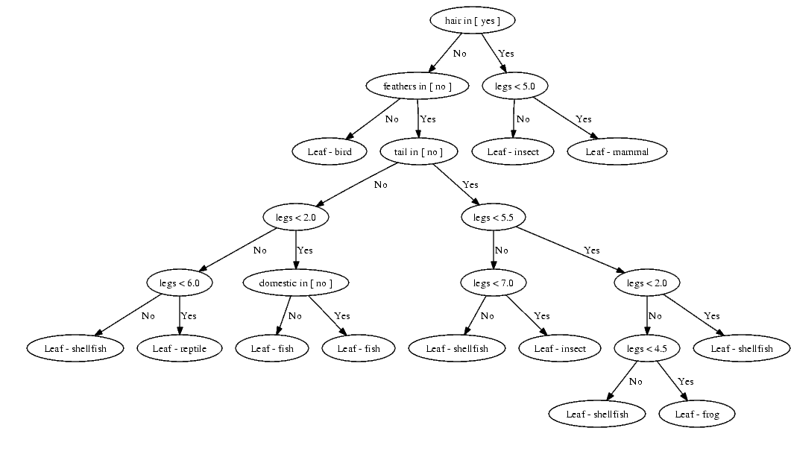

Classifiers are used when there is a class of interest that is known for atleast a portion of the records. The classifier is used to predict the value of the class for records where the classification doesn't exist. Classifiers can also give insight to what causes a record to be in the classes of interest. These classes could be a rating for a user, or weather a mushroom is poisonous. Classifiers are trained with data that contains the actual identification of the class. Once the model is trained a different set of data is run through the model to determine the accuracy, this data also contains the acutall identification of the class. If the results are satisfactory the model may be used in the real world.
Decision Trees subdivide the data, each subdivision creates two smaller groups of data. These two smaller groups have higher purity than the original group. The purity of a group is measured by the count of each class. A group with 10 elements of A and 10 Elements of B is less pure than a class that has 5 elements of A and 15 Elements of B. The goal of a decision tree is to create a model where the attributes of a data object lead to a guess at the classification. Decision trees are good when the data is highly partitional and when a model that runs quickly.
Rule based classifiers create rules about the data. Each rule is placed in a list where each rule is checked until one is triggered. These rules can be derived from a decision tree by taking every path as a rule. Rules generated by decision trees do not have an inherant order because they are mutually exclusive. Ordered rules are not mutually exclusive and can be generated by finding potential rules and ranking them in order of how often they are correct then how often they trigger. Rule based classifiers can quickly identify more common classes which is a strong point, the downside is in wide datasets the number of rules generated can be extremely large.
Artifical Neural Networks are a self updating model. An ANN has three parts, the input layer, a number of hidden layers, and an output layer. The input layer is made up of 1 node for each input. These inputs can be binary, ordinal or numeric. A connection with a random weight exists between each input node and hidden layer node. At each node the incoming connections are summed and the node calculates the output. The same thing occurs between each hiddenlayer and the final hiddenlayer and the output layer. Each node in the output layer signifies an output of interest. Each output node represents a class definition. Each time the class definition is incorrect backpropegation occurs. Backpropegation changes the weights of edges to create the correct value. As an ANN collects more data the model updates becoming more accurate. ANNs work well when a model that quickly updates as new data arrives. The problem with ANNs no readable model is produced, also as the number of inputs increases how long back propegation takes.
//returns the value of a node
public double getValue(){
if(value>.33){
return 1;
}
if(value<-.33){
return -1;
}
return 0;
}
//calculates the value of a node
public void calculateValue(){
value=0;
for(int i=0;i<incomingEdges.size();i++){
value+=incomingEdges.get(i).getValue();
}
}
Bayes classifiers use probabilities to make predictions. In this case the important probabilities are "the probability of a given b." These probabilites allow the identification of a class based off of the training data. Bayesian classifiers are very simple and quickly create a model that returns probabilites instead of a class giving a broader view of the classifier.
Nearest neighbor classifiers find the n closest data points with a known class. Once the closest points are identified each class gets a score based on which of the nearby points are of the same class. Usually the closest point has the most weight when determining class but sometimes each of the nearest n points gets the same weight. Nearest neighbors works better with smaller datasets and doesn't require a model to be maintained the problem is as the dataset gets larger the computation time increases significantly.